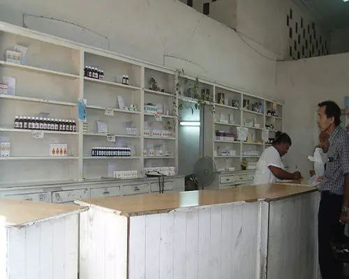

Farmacia Comunitaria Normal "Pedroso"
Ubicada en la calle 14 No 1712 e/ 17 y 21 Comunidad Pedroso, se dedica a la venta de medicamentos e insumos a personas naturales
Ubicada en la calle 14 No 1712 e/ 17 y 21 Comunidad Pedroso, se dedica a la venta de medicamentos e insumos a personas naturales
El presidente de BioCubaFarma, Dr. C. Eduardo Martínez Díaz y otros directivos de ese grupo y sus empresas comparecerán este miércoles en la...
3 semana
Las autoridades afirmaron que para estas fechas debían estar disponibles algunos fármacos cuya producción se retomó recientemente....
1 semana
Líderes de la industria farmacéutica en Reino Unido advirtieron hoy sobre la posibilidad de cierre de los...
2 semana